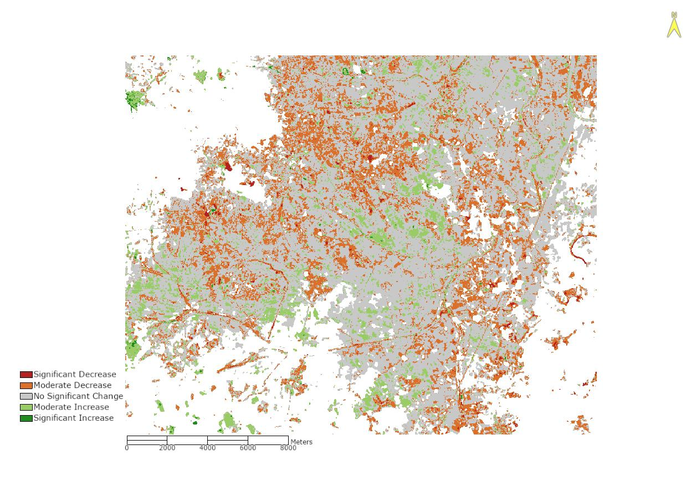

Normalized Difference Vegetation Index (NDVI) Assessment of South Hwanghae, North Korea (2013-2023)
Adam Day | May, 2025
1. INTRODUCTION
North Korea is an East Asia country located on the northern half of the Korean Peninsula. The Democratic People’s Republic of Korea (DPRK), the governing body of North Korea, is a totalitarian dictatorship led by the Kim family who see full control over all of North Korea’s internal government operations and affairs, including their agricultural sector. The DPRK have historically faced agricultural challenges, which are in part due to their centrally planned economy & agricultural sector. Collectivization of farm crops are at the core ideology for the nation, and one which has impacted the DPRK’s forests, soil fertility, and natural waters. The DPRK’s collective agriculture-based policies discourages single and double cropping rotation systems, which have a proven history to be a sound, low-cost means to boost soil fertility, due to the fear of failure to meet grain production targets set by the government (Michalk, & Mueller, (2003). In addition to this, widespread reliance on firewood and coal of household heating has led to extensive deforestation throughout the country. As Tenebaum put it “The nation is mired in a morass of intertwined environmental problems.” (Tenebaum, 2005).
The environmental impacts of deforestation are widespread throughout the DPRK and are further accelerated due to the natural heavy rain season occurring during the warmer summer months. Heavy rainfall, coupled with cleared slopes steeper than 20 degrees results in heavy amounts of soil erosion and loss of topsoil (Tenebaum, 2005). These factors combined have led to severe soil fertility deterioration throughout the nation. The environmental pressures placed on North Korea, along with the agricultural inefficacies of the DPRK led to a wide-spread famine in the mid to late 1990s, leaving hundreds of thousands of dead, and millions more food insecure.
Given the environmental and agricultural challenges concerns that North Korea faces, the country is a prime candidate for an agricultural analysis through the use of remote sensing. This analysis aims to measure the agricultural productivity of one of North Korea’s most important agricultural provinces using satellite imagery combined with the Normal Difference Vegetation Index (NDVI). The South Hwanghae province is historically one of North Korea’s most prominent agricultural sectors. With growing seasons typically lasing from June to August, this area and time period make it an ideal area of study for this analysis. Landsat 8/9 is equipped with imagery containing spatial resolutions of 30m across 10 bands, a radiometric resolution between 12-14 bit, and a temporal resolution of 16 days, making it suitable for source data.
The 2010 Botetourt County Comprehensive Plan states that Agricultural and Forested Lands account for approximately 69.1% of total land cover in 2010. Agricultural practices have been the main economic driver historically in Botetourt County for a number of years. As stated in the plan, this rural nature of the county has become an attractive location for residential development over time and was expected to have impacts on conversion of agricultural land into medium-density suburban development. Therefore, it is to be expected that with the increase in demand for development, clearing of land for said development will result in habitat fragmentation over a period of time.
2. METHODS
This analysis began with the collection of Landsat 8 Level-1 images for the South Hwanghae Province of North Korea, with a focus specifically on the Chaeryŏng-Anak river basin valley. Using USGS EarthExplorer data sets, two time points were captured for this area: August 22, 2023 and August 18, 2023, both within the June-August peak growing season. Cloud cover thresholds were set to <30%.
Both image files were imported into ENVI for further processing. To reduce processing and storage space demand, a Region of Interest (ROI) was defined around the area of study, encompassing approximately 450km2 of the area. Imagery was then subset to this ROI prior to ENVI processing. Radiometric calibration was performed on both images using Top-of-Atmosphere (TOA) reflectance to correct for atmospheric scattering. Figure 2 and Figure 3 below show the outcome of this correction. Following the TOA correction, a cloud mask was generated for each image with kernel size set to 1 and cloud probability threshold set to 95%. With both images radiometrically calibrated and cloud masked, NDVI values for both years was calculated using ENVI’s Spectral Indices toolbox.
With the NDVI results calculated, five NDVI value ranges were created and color coded using the following parameters shown in Table 1:
Table 1 - NDVI Class Value Ranges
| Class | NDVI Range | Color |
|---|---|---|
| Very Low / No Vegetation | Min. to 0.1 | Dark Gray / Brown |
| Low Vegetation | 0.1 to 0.25 | Light Brown / Tan |
| Moderate Vegetation | 0.25 to 0.45 | Yellow Green |
| High Vegetation | 0.45 to 0.65 | Medium Green |
| Very High Vegetation | 0.65 to Max | Dark Green |
Figure 4 and Figure 5 below show the NDVI results with cloud mask and classifications for the ROI in 2013 and 2023.
The delta NDVI (dNDVI) values for each year was calculated to determine changes in vegetation health between both years. This was conducted in ENVI by using the Band Math tool, using the float(b1-b2) equation, where b1 represents the NDVI 2013 image and b2 represents the NDVI 2023. These values were then classified within five value ranges and color coded with results shown below in Table 2:
Table 2 - dNDVI Class Value Ranges
| Class | NDVI Range | Meaning | Color |
|---|---|---|---|
| Significant Decrease | Min to -0.20 | Large loss of vegetation | Dark Red |
| Moderate Decrease | -0.20 to -0.05 | Mild loss of vegetation | Orange / Brown |
| No Significant Change | -0.05 to 0.05 | Stable vegetation | Light Gray |
| Moderate Increase | 0.05 to 0.20 | Mild vegetation gain | Yellow Green |
| Signficant Increase | 0.20 to Max | Large loss of vegetation | Dark Green |
Figure 6 below shows the outcome of the dNDVI calculation.
RESULTS
The tables below show the outcome from this analysis:
Table 3 - NDVI Results
| Year | Min | Max | Mean | Standard Deviation | Pixel Count | Area (Ha) |
|---|---|---|---|---|---|---|
| 2013 | -0.247681 | 0.809216 | 0.615888 | 0.130367 | 487654 | 108462 |
| 2023 | -0.151174 | 0.815971 | 0.645155 | 0.107294 | 487654 | 108462 |
| dNDVI | -0.0624434 | 0.620506 | 0.015553 | 0.0652412 | 312869 | 69587 |
As seen in Table 3 above, between 2013 and 2023, minimum NDVI values decreased from -0.24 to -0.15 with a dNDVI value of -0.62 indicating a significant loss decrease of vegetation. Max NDVI values between 2013 and 2023 only slightly improved from 0.80 to 0.81with this dNDVI value indicating a significant increase. Additionally, mean NDVI values increased from 0.61 to 0.64, however a decrease in standard deviation NDVI was found from 0.13 to 0.10.
Table 4 - NDVI Classified - 2013
| Class | Values (µm) | Pixel Count | Area (Ha) | Precentage |
|---|---|---|---|---|
| Very Low / No Vegetation | -0.247681 to 0.1 | 1,975 | 439 | 0.41% |
| Low Vegetation | 0.1 to 0.25 | 2,007 | 446 | 0.41% |
| Moderate Vegetation | 0.25 to 0.45 | 17,341 | 3,857 | 3.56% |
| High Vegetation | 0.45 to 0.65 | 143,198 | 31,849 | 29.36% |
| Very High Vegetation | 0.65 to 0.809216 | 257,603 | 57,295 | 52.82% |
Table 4 shows that the 2013 Classified NDVI values indicate that approximately 80% of the ROI was in the ‘High Vegetation’ or ‘Very High Vegetation’ category. Only 3.5% of the ROI values were found to be in the ‘Moderate Vegetation’ category, and 0.41% of the ROI fell within both the ‘Low Vegetation’ and ‘Very Low / No Vegetation’ categories.
Table 5 - NDVI Classified - 2023
| Class | Values (µm) | Pixel Count | Area (Ha) | Precentage |
|---|---|---|---|---|
| Very Low / No Vegetation | -0.247681 to 0.1 | 1,576 | 351 | 0.32% |
| Low Vegetation | 0.1 to 0.25 | 1,781 | 396 | 0.37% |
| Moderate Vegetation | 0.25 to 0.45 | 10,794 | 2,401 | 2.21% |
| High Vegetation | 0.45 to 0.65 | 95,587 | 21,260 | 19.60% |
| Very High Vegetation | 0.65 to 0.809216 | 226,683 | 50,418 | 46.48% |
The 2023 Classified NDVI values, shown in Table 5, found that approximately 65% of the ROI was in the ‘High Vegetation’ or ‘Very High Vegetation’ category, indicating a drop of approximately 15% from 2013. Additionally, 2.2% of the ROI values were found to be in the ‘Moderate Vegetation’ category, resulting in a drop from the previous 3.56% in 2013. The ‘Low Vegetation’ category found 0.37% of the ROI to fall within this category, and 0.32% of the ROI in the ‘Very Low / No Vegetation’ category, signifying a drop in both categories.
Table 6 - NDVI 2013 to 2023 Percentage Change
| Class | 2013 | 2023 | Difference |
|---|---|---|---|
| Very Low / No Vegetation | 0.41% | 0.32% | -0.09% |
| Low Vegetation | 0.41% | 0.37% | -0.04% |
| Moderate Vegetation | 3.56% | 2.21% | -1.35% |
| High Vegetation | 29.36% | 19.60% | -9.76% |
| Very High Vegetation | 52.82% | 46.48% | -6.34% |
Table 6 above shows the difference in percentages of NDVI values within each category between both years. Each category saw an overall drop in percentages from 2013 to 2023.
Table 7 - dNDVI Results with Classifications
| Class | Values (µm) | Pixel Count | Area (Ha) | Percentage |
|---|---|---|---|---|
| Significant Decrease | -0.624434 | 2,920 | 649 | 0.60% |
| Moderate decrease | -0.2 to -0.05 | 72,262 | 16,072 | 14.82% |
| No Significant Change | -0.05 to 0.05 | 204,705 | 45,530 | 41.98% |
| Moderate increase | 0.05 to 0.2 | 32,053 | 7,129 | 6.57% |
| Significant increase | 0.2 to 0.620506 | 929 | 207 | 0.19% |
Table 7 above shows the results from the dNDVI calculation between 2013 and 2023. Overall, the ‘No Significant Change’ category saw the largest precent at nearly 42% of all dNDVI values. The ‘Moderate Increase’ category saw 6.57% of the values recorded with 0.19% of the dNDVI values measuring in the ‘Significant Increase’. Within the decreasing range of the values, 14.82% of all values were categorized in the ‘Moderate Decrease’ category and 0.60% of values in the ‘Significant Decrease’ range.
4. DISCUSSION
The results from this analysis share a valuable insight into the vegetation health of the Chaeryŏng-Anak river basin valley region of South Hwanghae Province between 2013 and 2023. While the mean NDVI increased slightly from 0.615 to 0.645, suggesting improvement in the vegetation health, the NDVI and dNDVI results suggests slight differences to this conclusion.
From 2013 to 2023, the portion of classified land within the ‘High’ and ‘Very High’ vegetation categories fell from approximately 82% to 66%, signifying a 15.1% drop in high-quality vegetation health. Coupled with this, moderate vegetation cover in the ‘Moderate Vegetation’ decreased from 3.56% to 2.21%, or a loss of 1.35%. While low quality vegetation in the ‘Very Low’ and ‘Low Vegetation’ classes both saw a slight decrease, this could likely be the result of slight reclassification differences at the lower range levels of the NDVI scale or cloud masking artifacts created by the cloud mask.
These findings are supported by the dNDVI results, which found that approximately 15.5% of the ROI showed declining NDVI values where 14.82% of the values fell into the ‘Moderate Decrease’ category and 0.60% in the ‘Significant Decrease’ category. By comparison, meaningful improvement to vegetation health only amounted to 6.76% (categorized as ‘Moderate’ or ‘Significant Increase’) with the majority of the coverage area remaining stable. Ultimately, this suggests that while few ‘hot spot’ productive patches exist, the majority of the agricultural landscape within the ROI is undergoing degradation
This is likely the outcome of many various factors North Korea faces including their historical deforestation efforts, poor soil management practices, and lack of sustainable agricultural practices such as utilizing crop rotation, all of which ultimately lead to a loss of soil fertility. With the South Hwanghae region being North Korea’s prime agricultural sector, the region still suffers from geographic and environmental factors which accelerate this degradation, including steep slopes and periods of heavy rainfall. It is likely that a wider range of environmental factors have also influence these outcomes, such as droughts, floods or climate variability, leading to further stress of an already fragile landscape.
Overall, the findings from this analysis support the conclusion that agricultural productivity within the South Hwanghae region of North Korea is facing a gradual decline of soil fertility and agricultural output. Extrapolating on these findings into the greater region of South Hwanghae, it is reasonable to conclude that wide-scale soil degradation may be taking place over a gradual period of time. Future analysis could improve upon this data and conclusion by ultimately testing a large range of landscape or utilizing more frequent time period sampling such as on a yearly or 2-year cycle. Additionally, specified areas of land, such as agricultural fields, could be measured independently by utilizing ENVI’s land classification toolset, narrowing the scope of the NDVI measurements to ensure only agricultural field data is capture. Finally, future improvements to satellites and sensor data could enhance the data of this analysis, thereby reinforcing or challenging the conclusions found within this report. Ultimately, this analysis highlights the importance of long-term NDVI monitoring and its usefulness for future food security assessments in regions such as the North Korea, where ground-truth data and internal information are scarce.
5. LISTED FIGURES
Figure1: South Hwanghae, NK | NDVI Analysis Region of Interest (ROI)

Figure 2: 2013 ROI False Color Composite

Figure 3: 2023 ROI False Color Composite
Figure 4: 2013 ROI NDVI Classified Land
Figure 5: 2023 ROI NDVI Classified Land
Figure 6: ROI dNDVI Classified
6. REFERENCES
Tenenbaum, D. J. (2005). International Health: North Korean catastrophe. Environmental Health Perspectives, 113(1). https://doi.org/10.1289/ehp.113-a26
Michalk, D., & Mueller, H. (2003). Strategies to improve cropland soils in North Korea using pasture leys. Agriculture Ecosystems & Environment, 95(1), 185–202. https://doi.org/10.1016/s0167-8809(02)00096-8
Lienert, J. (2004). Habitat fragmentation effects on fitness of plant populations – a review. Journal for Nature Conservation, 12(1), 53–72. https://doi.org/10.1016/j.jnc.2003.07.002
https://ipad.fas.usda.gov/countrysummary/default.aspx?id=KN